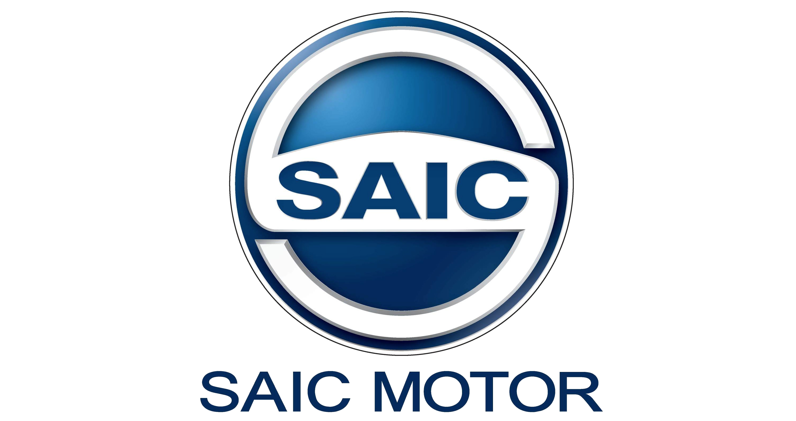
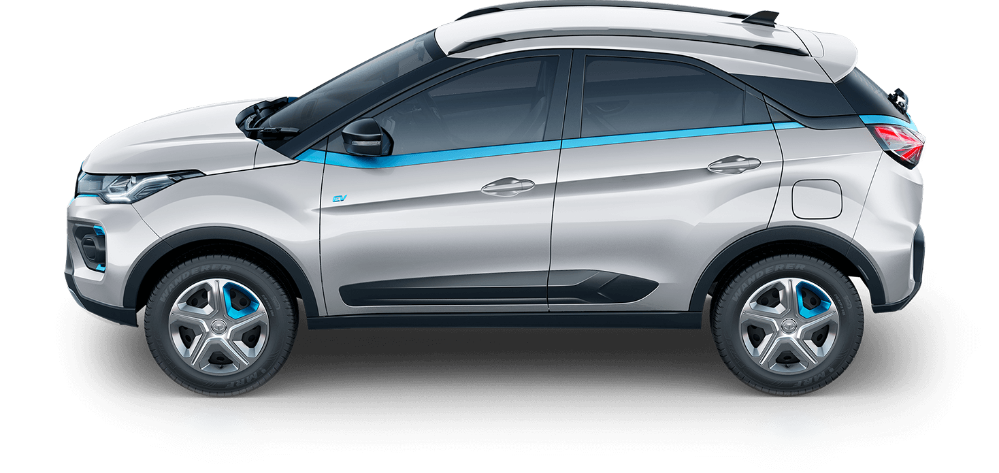

SAIC is a Chinese state-owned multinational automotive design and manufacturing company
headquatered in Sanghai , china.
SAIC Motor Corporation Limited (SAIC, formerly Shanghai Automotive Industry Corporation) is a Chinese state-owned multinational automotive design and manufacturing company headquartered in Shanghai, China. A Fortune Global 100 company and one of the "Big Four" state-owned Chinese automakers (along with Changan Automobile, FAW Group, and Dongfeng Motor Corporation ),the company had the largest production volume of any Chinese automaker in 2014, making more than 4.5 million vehicles. Its manufacturing mix is not wholly consumer offerings, however, with as many as one million SAIC passenger vehicles being commercial vans. As of 2021, SAIC is the second largest Chinese automaker and the twelfth-largest worldwide by production.

SAIC traces its origins to the early years of the Chinese automobile industry in the 1940s, and SAIC was one of the few carmakers in Mao's China, making the Shanghai SH760.[7] Currently, it participates in the oldest surviving sino-foreign car making joint venture, with Volkswagen, and in addition has had a joint venture with General Motors since 1998. SAIC products sell under a variety of brand names, including those of its joint venture partners. Two notable brands owned by SAIC itself are MG, a historic British car marque, and Roewe .
| Type : | state-owned. |
| Trade as : | SSE: 600104 |
| Industry : | Automotive |
| Founded : | 2011 as SA!C Motor Corporation Limited , 1995 as Shanghai Automotive Industry Corp. (Group) , 1955 as Shanghai International Combustion Engine |
| Headquater : | Shanghai, china |
| Key Peoples | Automotive |
| Products : | Automobiles , Commercial Vehicles. |
| Website: | saic motor |